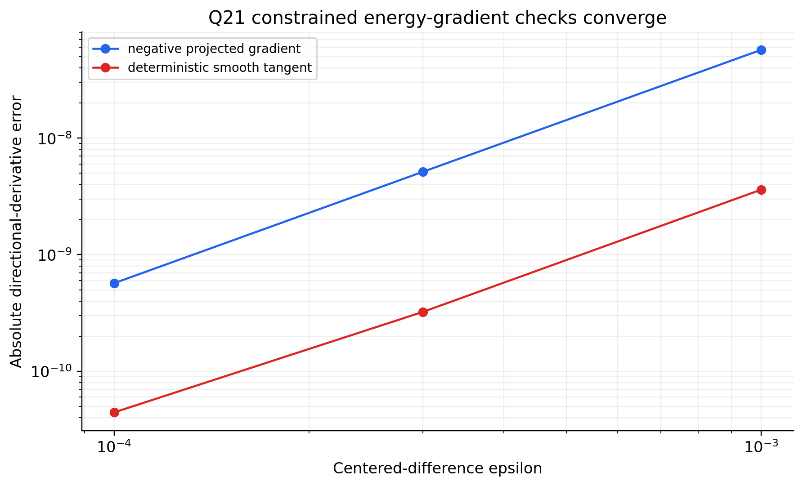
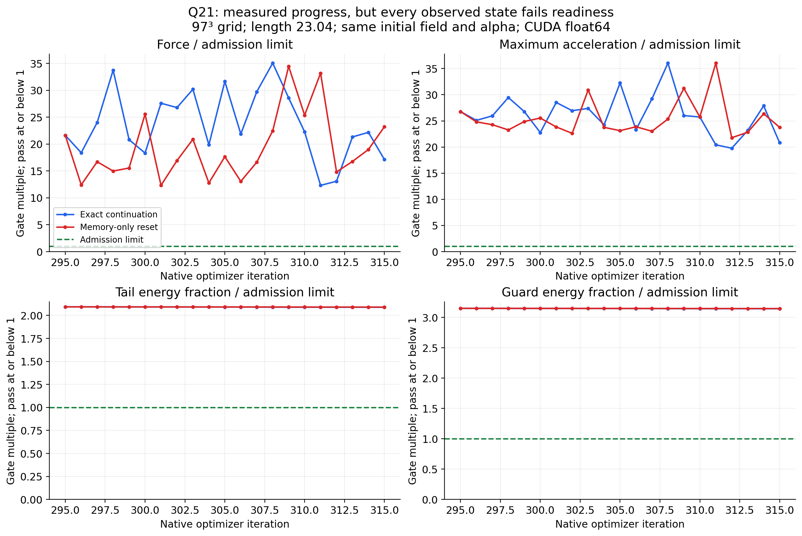
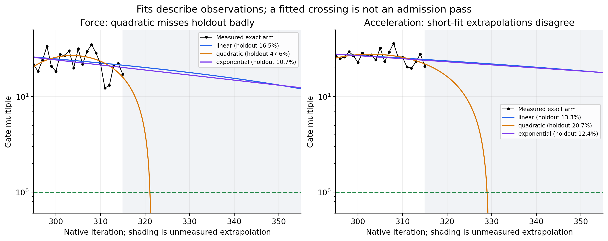

Assessment date: 21 November 2026, Australia/Melbourne. Run 20261120t114719z-48b7d4cf finished at 22:59:17 Melbourne on 20 November (11:59:17 UTC). All values below are fractions or model units, not SI electron quantities.
Q21 remains a numerically unresolved candidate with measurable progress. Exact continuation improved both force and maximum acceleration during this bounded test, but no observed state passed stationarity or boundary admission. Clearing conjugacy memory did not establish a lasting advantage. Historical Q22 was not evaluated: the expected original checkpoint was absent at the checked location. That is an availability deferral, not a negative scientific result.
The supplied terminal log records the assessment/plan merged as PR 84 and the completed raw outcomes merged as PR 85. The latter merge commit is 168132f3dacc516a7b8c9278d45269b31c8edc13. Both documentation checks passed. These are statements from the supplied workstation log; this review made no GitHub connection. This subsequent assessment has not itself been published.
The two arms used the same authenticated iteration-295 field, initial alpha 0.16687398718132204, 97³ grid, 23.04 box, D4 action and CUDA float64 backend. The exact arm preserved all optimizer memory. The reset arm cleared only old gradient, old preconditioned gradient and direction. Independent CPU energy/gradient checks passed before and after updates. Both arms accepted 20 updates and used 54 committed objective evaluations; there were no interrupted/replayed charges. The diagnostic consumed its 40-attempt allocation, taking zero physical-time steps.
Q2 reproduced and passed its original gates. The Q21 constrained gradient checks passed for both tested directions at all three epsilon sizes; errors fell approximately quadratically with epsilon. At epsilon 0.0001 the absolute derivative errors were about 5.69×10⁻¹⁰ and 4.44×10⁻¹¹. This supports the energy/gradient implementation in those directions on this field. It does not prove every implementation path, mesh independence or physical stability.

| Measurement | Common start, iteration 295 | Exact, iteration 315 | Memory reset, iteration 315 | Original limit |
|---|---|---|---|---|
| Relative force | 0.002161781 | 0.001712181 | 0.002321337 | ≤0.0001 |
| Maximum acceleration | 0.02678206 | 0.02081109 | 0.02377355 | ≤0.001 |
| Tail fraction | 0.001569382 | 0.001566010 | 0.001567417 | ≤0.00075 |
| Guard fraction | 0.003150298 | 0.003143885 | 0.003146569 | ≤0.001 |
| Representation | Pass | Pass | Pass | Unchanged |
| Strict stationarity | Fail | Fail | Fail | Both residual gates plus representation |
| Boundary admission | Fail | Fail | Fail | Both boundary fractions |
Exact continuation reduced force by 20.80% and maximum acceleration by 22.29%. Its endpoint remains 17.12 times the force limit and 20.81 times the acceleration limit. Tail and guard fractions improved only about 0.21% and 0.20%; they remain 2.088 and 3.144 times their limits. Energy decreased by only 0.000821%, while force and acceleration oscillated substantially. Decreasing energy alone is not stationarity or stability.
The reset arm finished with force 7.38% worse than its own start, although maximum acceleration fell 11.23%. Compared with the exact endpoint, it finished 35.58% worse in force and 14.24% worse in maximum acceleration. Both endpoints preserve topology/representation diagnostics; none of the 42 recorded arm observations supplies readiness.

The reset arm was jointly better than exact at 12 of the 20 post-start matched observations. Therefore the result is mixed in time, not proof that resetting memory always makes optimization worse. Its early advantage did not persist to the endpoint. The exact arm's best joint point was iteration 312, where the larger residual gate multiple was still 19.77; the reset arm's best was also 312, at 21.78. Neither best point is near admission. The iteration-312 values are measured observations, not a declared retained full checkpoint; they must not be reused as restart parents without matching field bytes. The retained iteration-315 exact state is the proposed parent.
Both branches stopped because the declared diagnostic budget was exhausted. They did not stop on a newly detected numerical fault, representation loss or certified stagnation. Q21 should not be relabelled as physically excluded, and this test does not establish a hard plateau. The evidence supports retaining the exact arm as the preferred current parent, not applying memory resets routinely.
The recorded fits were independently recomputed using chronological holdout of the last three observations. Errors below are relative RMSE on that short holdout, not confidence intervals for future threshold times.
| Arm / quantity | Linear | Quadratic | Exponential |
|---|---|---|---|
| Exact force | 16.51% | 47.58% | 10.66% |
| Exact acceleration | 13.28% | 20.71% | 12.40% |
| Reset force | 29.12% | 54.08% | 22.83% |
| Reset acceleration | 14.23% | 24.23% | 12.21% |
The exact force quadratic fails the prior 25% holdout criterion, as do the reset force linear and quadratic fits. Even acceleration fits that satisfy this short criterion disagree strongly when extrapolated. For exact continuation, formal acceleration-limit crossings occur near native iterations 329 (quadratic), 456 (linear) and 744 (exponential). Force crossings from the two better-validated descriptions occur near 403 and 561. These are algebraic extrapolations from 21 points, not predictions accepted for scheduling or scientific admission. None accounts for eventual boundary admission.

The latest five exact-arm points have worsening fitted force and acceleration slopes, while the last eight and ten points have improving slopes. Comparing the latest eight-point medians with the preceding eight gives roughly 20% force and 10% acceleration improvement. That window sensitivity supports a small conditional probe if Q21 is continued; it does not support a long run or a claim that convergence has ceased. Every accepted step was already measured, so temporal undersampling cannot explain missed optimizer turns within this test.
No Q22 case output is present. The inventory contains one absent path: the expected final.npz under ElectronFieldTopology-q22-study/artifacts/q22-fresh-20261101T102757+1100. Its required SHA256 is 1412f284fa0634519babc384329b10cebb924986c97ef7833d3ff8955abafcc1.
This scoped lookup does not establish that no copy exists elsewhere on the workstation, in another study clone, full-field archive or backup. The native cell-to-D4 comparison therefore remains unperformed. The earlier bounded positive cell-functional Q22 result remains recorded within its limits. Neither the present Q21 result nor missing Q22 bytes overturns it. A fresh 161³ cable-family field or a regenerated seed cannot replace the historical checkpoint for this comparison.
The next recovery step should inventory plausible retained project directories and full-field archives by the exact hash. If found, evaluate the native 129³, spacing 0.12, length 15.36 stored field under both operators without resampling, normalization or relaxation. If its storage dtype is float32, preserve those values and distinguish the archival replay from the original full-precision solver measurements. If no authenticated copy can be recovered, record that limitation and keep the historical report separate from unverified present-day D4 readiness.
The next tranche above is a proposal, not a run started by this assessment. Recovering/evaluating actual Q22 bytes or continuing Q21 requires the zbook. This compact assessment itself is complete without further workstation computation.
All 74 compact payload hashes and ZIP CRCs pass. The exact 42-payload executed handover and 94-payload prior diagnosis also verify. The original source identity, optimizer intervention digests, checkpoint seal references, paired histories, 40-attempt ledger and gate classifications are consistent. All 12 model fits and their holdout errors reproduce independently. Six new full-state NPZs are listed with hashes; their contents remain local and were not re-evaluated here.
The recorded service telemetry has 143 samples, peak cgroup memory about 1.623 GiB, minimum available host RAM about 9.192 GiB, no MemoryHigh events, no OOM kills and zero sampled host full-memory-pressure average over ten seconds. There is no evidence in this run of the earlier memory-pressure interruption. The run completed in about 12 minutes after launch; the unperformed Q22 workload is not included in that elapsed time.
No new relaxation or physical-time steps were taken by this review. Instantaneous static acceleration, a positive topology diagnostic or a short optimization improvement does not establish long-time stability or electron properties.
MEASUREMENTS.csv: all 42 arm observations with gate outcomes and objective calls.FIT-COMPARISON.csv, ANALYSIS.json: measured comparisons, independently checked fits and clearly labelled formal extrapolations.VALIDATION.json, audit.py: reproducible compact audit using Python's standard library.data/completed-evidence.zip: unchanged uploaded evidence.data/workstation-terminal.txt: unchanged supplied publication and status log.figures/: high-resolution measured plots and vector copies.